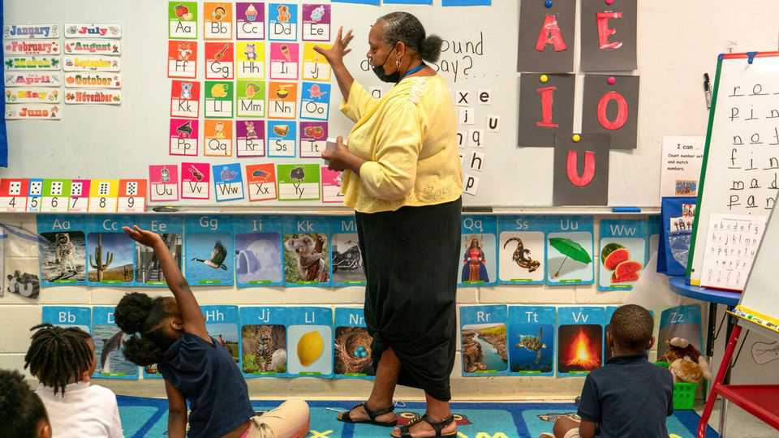
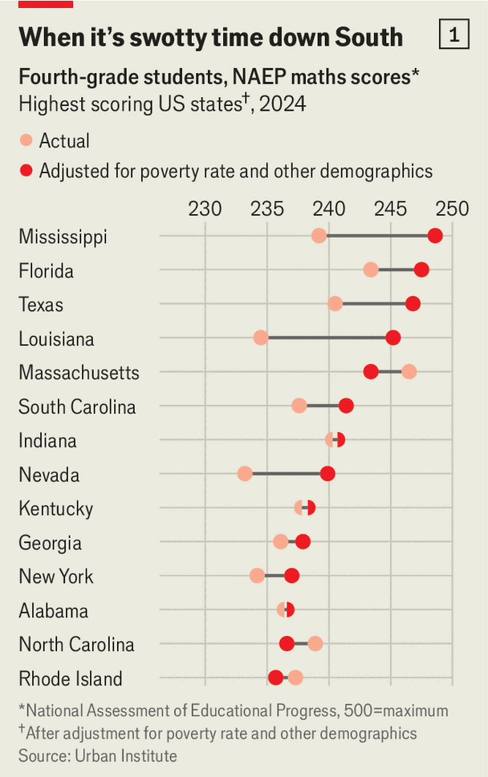
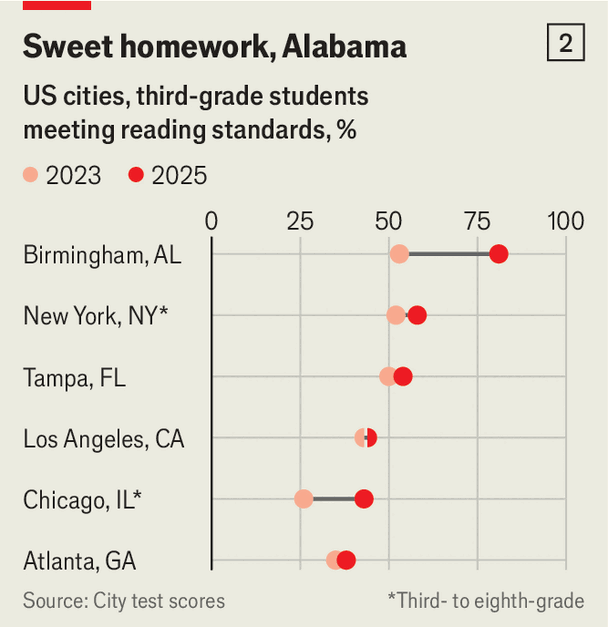

United States | Winning with a lottery

Just six years ago Democratic states looked like they were better at educating children than Republican ones. Their pupils scored higher on reading and maths tests. But since the pandemic students in places like Alabama, Florida, Louisiana, Mississippi and Texas have shot up the national rankings.

Adjust the results for such things as student poverty, and the “southern surge” is even more impressive. On a ranking compiled by the Urban Institute, a think-tank, Mississippi comes top (see chart 1). Florida, Texas and Louisiana also beat Massachusetts, the state that scores best when disadvantage is not taken into account.
It helps that red states have gone back to basics: legislators in state capitals have enacted new rules that require teaching reading via phonics and holding failing schools accountable. Those decisions matter a great deal for classrooms. But America is made up of more than 13,000 school districts, most of which have the autonomy to set policy, too. That gives cities and towns across the country the opportunity to run small experiments to figure out how to get students to learn—and then to double down on what works.
In Birmingham, Alabama, city leaders are doing just that. This is not a place where fixes come easily. Pupils in the school district are almost all black and nine out of ten qualify for free or cut-price lunches. For years their test scores were a drag on state averages (which were already low). But a few clever policies seem to be turning things around.
In the past two years the city went from having 15 “F”-rated schools to just one. A Stanford and Harvard study found that children in Birmingham are making up for maths learning lost during covid lockdowns about half a grade level faster than students in less poor districts. Kay Ivey, Alabama’s Republican governor, boasted in her state-of-the-state address last February that Alabama is no longer “just a football state” but also an “education state”.
Three city programmes stand out. The first tackled absenteeism. After the pandemic, Americans were slow to return to school: in 2023 nearly a third of children nationwide were chronically absent, meaning that they missed at least 10% of school days. Birmingham was barely better. Knowing that children cannot learn if they don’t show up, the city worked with its public-housing authority—which houses about 40% of pupils—to offer incentives.
Under “Every Day Counts” parents whose children have perfect attendance for a month can enter a lottery to have the city pay their rent or utility bill. (Lotteries are a much cheaper incentive than subsidies for all.) And rather than having teens arrested for truancy, prosecutors started helping to make sure that those who were on the brink of missing too much class had clean clothes and a place to sleep at night (437 of the city’s pupils are homeless). In four years the share of students who were chronically absent halved from 29% to 13%.
Next, the district turned to preventing holiday learning loss. American children spend fewer days in school than their peers in other rich countries such as Britain or Australia. Mark Sullivan, Birmingham’s superintendent, knew that if he wanted to boost test scores he needed to change the calendar. He floated the idea of year-round school to the board, teachers, parents and pupils. But nobody liked it, so he introduced “intersession”, where extra classes carry on over breaks and children choose whether to come. Crucially, buses still run and lunch is served.

When the programme began in the autumn of 2021, around 1,800 students showed up. By spring the number had climbed to 7,000, a third of the district’s pupils, and by summer it reached 10,000, or half. The city now pays local college students and retired teachers to tutor those who are still falling behind. In 2023 just 53% of Birmingham’s third-graders read at grade level. Now 81% do, putting the city far ahead of others like it (see chart 2).
In 2020 some 82% of Birmingham seniors graduated from high school. This year the city predicts that 88% will. The young mayor, Randall Woodfin, wants more of them to go to college. He launched “Birmingham Promise”, a programme that pays full tuition at many Alabama colleges for graduates of the city’s public schools. He persuaded businesses across the state that investing in it would help them build a skilled workforce, raising $20m in private funds to match the city’s $10m. “This is not charity, it’s a downpayment,” he told them.
Can education reform really be that easy? Doug Harris, an economist at Tulane University who studied New Orleans’s school turnaround, says that modest policy changes are unlikely to explain the Birmingham bump. Bigger state policies such as phonics are probably at play, other researchers reckon, and it is not clear that local tricks can be replicated elsewhere.
Evidence for the effectiveness of small programmes is seldom conclusive, especially when they are relatively new. But Mr Woodfin is bullish. He regularly gets calls from other mayors asking about the programmes. Optimists note that big evidence-based schemes usually start as small-town experiments.
The conventional wisdom has long been that there is little hope for the most disadvantaged children. Jim Shelton, a former deputy education secretary, believes that places like Birmingham are changing that narrative. “The South is now demonstrating that it’s never really been about the kids,” he says. “It’s always been about our ability to serve them.” ■
Stay on top of American politics with The US in brief, our daily newsletter with fast analysis of the most important political news, and Checks and Balance, a weekly note that examines the state of American democracy and the issues that matter to voters.